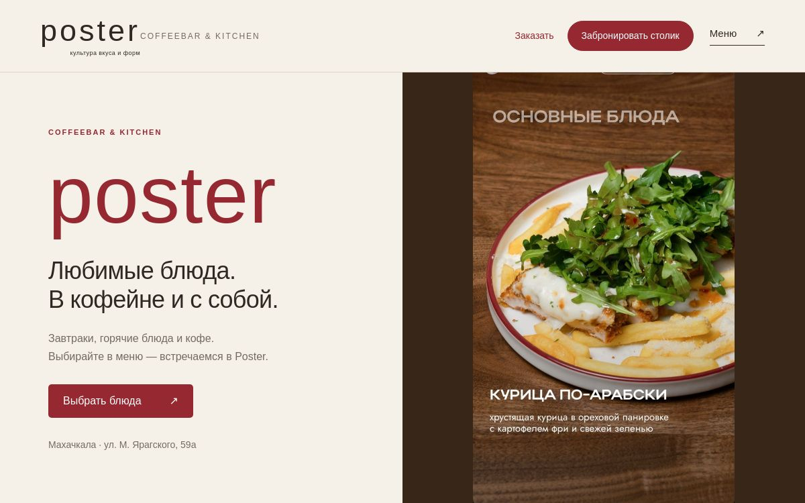
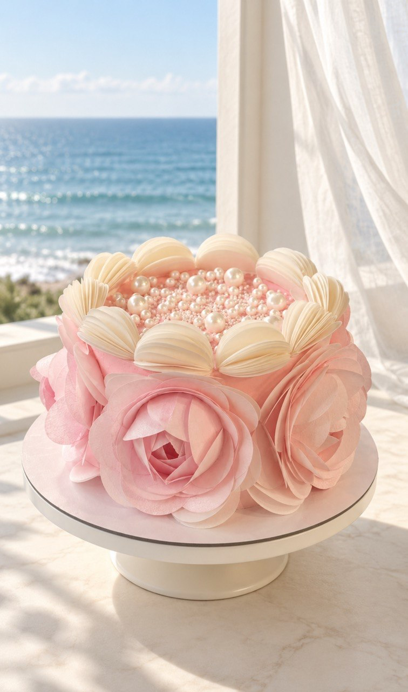

Для кафе, ресторанов и кондитерских
Сайты и QR-меню
Блюда, цены, состав, часы работы и условия заказа в одном месте. Гость может выбрать и оставить заявку на вынос или столик, а сотрудник подтвердит её.
Меседу · сайты с вниманием к гостю
Гости снова спрашивают о меню, цене и заказе?
Я Меседу. Собираю сайты, где человек может сам посмотреть блюда, условия и оставить заявку. Сначала выясняю, что гости спрашивают чаще всего, и только потом предлагаю подходящий формат.

01 / Чем помогу
Для заведения это меню и заказ, для специалиста — описание услуг и запись. Начнём с того, что сейчас приходится объяснять клиентам вручную.
Для кафе, ресторанов и кондитерских
Блюда, цены, состав, часы работы и условия заказа в одном месте. Гость может выбрать и оставить заявку на вынос или столик, а сотрудник подтвердит её.
Для блюд, десертов и товаров
Подберу фон, свет и подачу с помощью ИИ, в том числе для домашнего текстиля. Перед публикацией сверяю цвет, форму и важные детали с оригиналом.
Для специалистов · по задаче
Описание услуг, цены, ответы на частые вопросы и заявка на запись или консультацию. Сначала уточним, как вы сейчас принимаете обращения.
02 / Обо мне
Опыт работы с покупателями в магазине научил меня сначала выяснять, что человеку нужно, объяснять варианты и честно говорить, когда выбор ему не подходит. Тот же принцип я переношу в сайты.
Сайт собираю с помощью ИИ-инструментов — это часто называют вайб-кодингом. Сама продумываю, как человек найдёт цену, увидит условия и оставит заявку, а затем проверяю этот путь на телефоне.
Если вашу задачу можно решить проще, скажу об этом до начала работы.
03 / Работы
Откройте моё демо QR-меню и сравните исходное фото десерта с новым оформлением.
Мой демо-проект: меню с фото и ценами, заявка на вынос и бронирование столика. Это пример решения, а не сайт, запущенный для кофейни.
Открыть демо ↗
ПослеИсходное фото десерта и вариант с новым фоном: светлый стол у окна, море и мягкая штора.
04 / Как работаю
Состав работы, срок и стоимость обсудим, когда станет понятно, что именно нужно вашему бизнесу.
Вы расскажете, где клиенты сейчас смотрят меню или услуги и что чаще всего уточняют.
Определим, нужен ли новый сайт, QR-меню, страница записи или оформление фото. Обсудим состав, срок и стоимость.
Сверим тексты и фото, проверим на телефоне цены, кнопки и путь заявки.
Покажу, как пользоваться страницей, и заранее обсудим, кто будет обновлять меню, цены и другую информацию.
Начнём с разговора
Напишите, чем занимаетесь, пришлите ссылку на вашу страницу и один вопрос, который вам часто задают. Вместе поймём, с чего лучше начать.